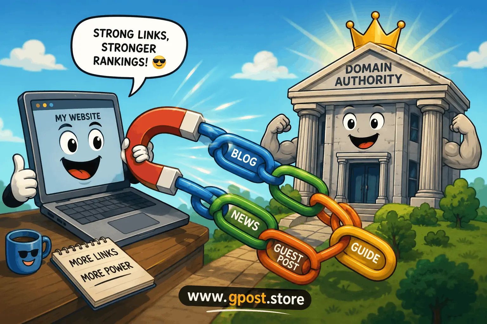

How link building affects domain authority
How link building affects domain authority is one of the most important ranking concepts in modern SEO, especially for websites targeting competitive US search results in 2026. Search engines rely heavily on backlinks to measure trust, relevance, and authority across the web. When done correctly, link building can significantly improve organic rankings, increase referral traffic, and strengthen overall domain authority signals.
However, not all backlinks are equal. A few high-quality, niche-relevant editorial links can outperform hundreds of low-quality spam links. Many website owners still misunderstand this relationship, leading to wasted budgets and even ranking penalties. In this guide, we break down exactly how backlinks influence authority, what strategies work today, and what mistakes can damage your SEO performance.
Image Section

How link building affects domain authority through structured backlink growth and SEO strategy.
What Is How link building affects domain authority?
How link building affects domain authority refers to the process of how acquiring backlinks from other websites influences a site’s authority score, trustworthiness, and ability to rank in search engines like Google. Domain authority is a predictive SEO metric used to estimate how well a website can perform in search rankings based on its backlink profile and overall link equity.
In simple SEO terms, backlinks act like “votes of confidence.” When a trusted website links to your page, it signals to search engines that your content is valuable and credible. Over time, these signals accumulate and improve your domain authority.
For example, if a digital marketing blog earns backlinks from high-authority sites like industry publications or educational resources, its authority grows faster compared to a site that only relies on internal linking or low-quality directories.
This is why understanding relationship between backlinks and domain authority explained is essential for long-term SEO success.
Why How link building affects domain authority Matters for SEO in 2026
How link building affects domain authority matters more in 2026 because Google’s algorithm has become increasingly focused on trust signals, topical authority, and real-world relevance. According to multiple SEO studies, pages with strong backlink profiles are significantly more likely to rank on page one of Google results.
Based on industry data from Ahrefs, over 90% of web pages get zero organic traffic due to lack of backlinks. This highlights the critical role of link acquisition in visibility and authority building.
- Improved rankings: Strong backlinks directly influence SERP positions.
- Higher domain authority: Quality links increase trust signals.
- Faster indexing: Search engines discover pages quicker through links.
- Brand credibility: Mentions from authority sites build trust with users.
Another important factor is why link building is important for domain authority growth—it directly impacts how search engines evaluate your website’s expertise and relevance in a niche.
Types of How link building affects domain authority
Free / Organic Link Building
Free link building happens when websites naturally link to your content without payment. This usually occurs through high-value content, research, or viral articles.
- Pros: Natural, safe, long-term SEO value
- Cons: Slow growth, unpredictable results
Paid / Sponsored Links
These are links acquired through payment or sponsorships. While they can boost visibility, they must be handled carefully to avoid Google penalties.
- Pros: Fast results, controlled placement
- Cons: Risky if not disclosed or marked properly
Niche Blog Outreach
This involves contacting relevant blogs and requesting contextual backlinks through guest posting or collaborations.
- Pros: Highly relevant links, strong SEO impact
- Cons: Time-consuming outreach process
Editorial / Authority Sites
These are high-value links from trusted media, news, or educational platforms that significantly boost domain authority.
- Pros: Maximum authority boost, strong trust signals
- Cons: Difficult to acquire, competitive
How to Find How link building affects domain authority Opportunities
Finding strong backlink opportunities requires a structured SEO workflow combining research, competitor analysis, and outreach tools. Below are proven methods used by professional SEO strategists.
Google Search Operators
Use advanced search queries such as:
- “write for us” + your niche
- “guest post guidelines” + keyword
- “inurl:resources” + topic
Competitor Backlink Analysis
Analyze competitor websites using SEO tools like Ahrefs or SEMrush to identify where they are getting backlinks from. This reveals high-value opportunities you can replicate or improve upon.
SEO Tools
- Ahrefs – backlink explorer and competitor analysis
- BuzzSumo – content research and influencer discovery
- SEMrush – outreach and domain tracking
For deeper research on finding high-quality outreach targets, explore proven methods in How to find niche blogs for guest posting in 2026, which helps identify relevant websites faster and more effectively.
Mini Step Guide
- Search competitors in your niche
- Export backlink profiles
- Filter high-authority domains
- Identify guest post or outreach pages
- Contact site owners with personalized emails
- Track responses and placements
Step-by-Step How link building affects domain authority Strategy
1. Niche Research & Target Identification
The first step is identifying your niche and target audience. Without niche clarity, your backlinks will lack relevance, which weakens domain authority growth. Focus on websites that share topical alignment with your content. For example, a SaaS blog should target tech, software, and business publications instead of unrelated lifestyle sites.
2. Prospect Qualification
Next, evaluate potential websites using metrics like domain authority, organic traffic, and relevance. A strong backlink profile depends more on quality than quantity. Avoid websites with spammy link patterns or irrelevant content categories.
3. Personalized Outreach
Outreach is where most campaigns fail. Generic emails get ignored. Instead, personalize every message by referencing specific articles or gaps in their content. This increases acceptance rates significantly.
4. Content Creation & Pitch
Create high-value content tailored to the target website’s audience. Focus on actionable insights, case studies, and data-backed content that editors actually want to publish.
5. Link Placement & Anchor Text Strategy
Use natural anchor text variation. Avoid over-optimized exact match anchors. Instead, mix branded, generic, and partial-match anchors to maintain a natural backlink profile.
Advanced campaigns often rely on structured strategies like Guest Post Link Building to secure high-authority placements that directly improve domain authority signals.
6. Track, Measure & Scale
Monitor results using SEO tools. Track ranking improvements, referral traffic, and domain authority changes. Scale successful outreach patterns and replicate winning strategies.
Common Mistakes to Avoid
- ✗ Spam backlinks → hurts trust → focus on relevant outreach
- ✗ Irrelevant sites → reduces topical authority → choose niche blogs
- ✗ Over-optimized anchors → triggers algorithm flags → diversify anchors
- ✗ Generic outreach emails → low response rate → personalize messages
- ✗ Ignoring metrics → wasted effort → track DA, traffic, relevance
Pro SEO Tips for Maximum Results
- Use anchor text diversity to maintain a natural profile
- Build internal links after acquiring backlinks
- Prioritize niche relevance for stronger authority signals
- Build long-term relationships with publishers
Another advanced insight is understanding how long does link building take to affect domain authority. In most cases, improvements begin within 4–12 weeks depending on link quality and indexing speed.
Is How link building affects domain authority Still Worth It in 2026?
Yes, link building is still one of the most powerful SEO strategies in 2026. Despite algorithm updates, Google continues to rely heavily on backlinks as a core ranking signal. However, the emphasis has shifted from quantity to quality and contextual relevance.
| Strategy |
ROI |
Risk Level |
Effect on Authority |
| Guest Posting |
High |
Low |
Strong |
| Niche Edits |
Medium |
Medium |
Moderate |
| PBN Links |
Short-term High |
High |
Risky |
Looking forward, SEO will continue prioritizing authority-driven ecosystems where backlinks act as trust endorsements rather than manipulative signals.
When to Avoid How link building affects domain authority
- Low-quality websites with spam outbound links
- Sites with no organic traffic or engagement
- Irrelevant niche platforms
- Over-optimized link schemes
Can link building lower domain authority if done wrong? Yes, toxic backlinks or spam patterns can trigger algorithmic devaluation, reducing overall authority and rankings.
FAQs
What is domain authority in SEO?
Domain authority is a predictive score showing how well a website may rank based on backlink strength and SEO signals.
Why does link building improve rankings?
Link building improves rankings by increasing trust signals and authority through high-quality backlinks from relevant websites.
What is the biggest link building mistake?
The biggest mistake is using spam or irrelevant backlinks, which weakens authority and may trigger search engine penalties.
Guest posting vs niche edits: which is better?
Guest posting is safer and more sustainable, while niche edits offer faster but riskier SEO improvements depending on context.
How do I start link building?
Start by researching niche websites, analyzing competitors, and sending personalized outreach emails with valuable content offers.
Does anchor text matter in SEO?
Yes, anchor text helps search engines understand relevance, but over-optimization can harm domain authority growth significantly.
Do backlinks help indexing?
Backlinks help search engines discover and index pages faster, improving visibility and crawl efficiency in SEO systems.
What tools are best for link building?
Ahrefs, SEMrush, and BuzzSumo are widely used tools for backlink analysis, outreach, and competitor research workflows.
Are backlinks still important for authority?
Yes, backlinks remain one of the strongest ranking signals influencing domain authority and organic search performance today.
What will link building look like in 2026?
In 2026, link building will focus more on relevance, authority partnerships, and content-driven organic link acquisition strategies.
Conclusion
How link building affects domain authority ultimately comes down to quality, relevance, and consistency. Websites that invest in strategic, white-hat link building consistently outperform those relying on shortcuts or low-quality backlinks.
To move forward effectively, focus on three actions: build niche-relevant backlinks, diversify your anchor text strategy, and monitor your domain authority growth using SEO tools. Over time, these efforts compound into stronger rankings and increased organic traffic.
Remember, SEO is not about quick wins—it is about building long-term authority that search engines trust.